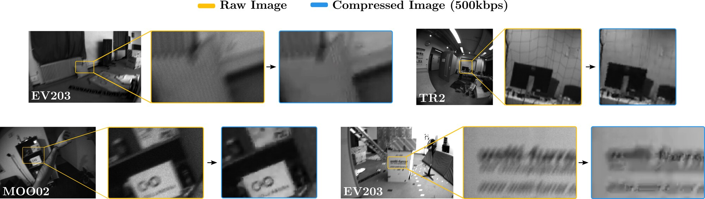
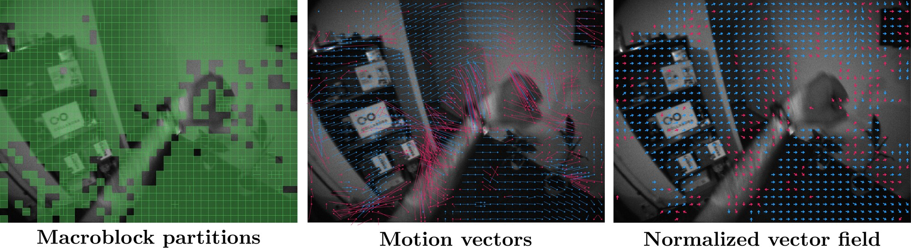
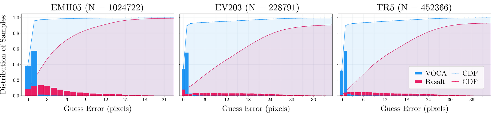
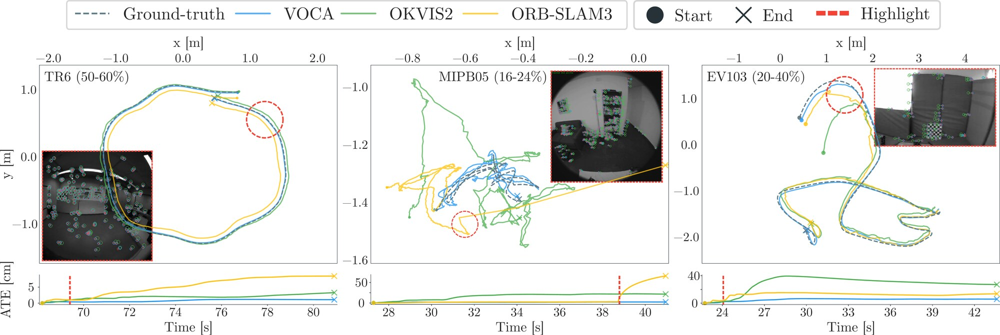
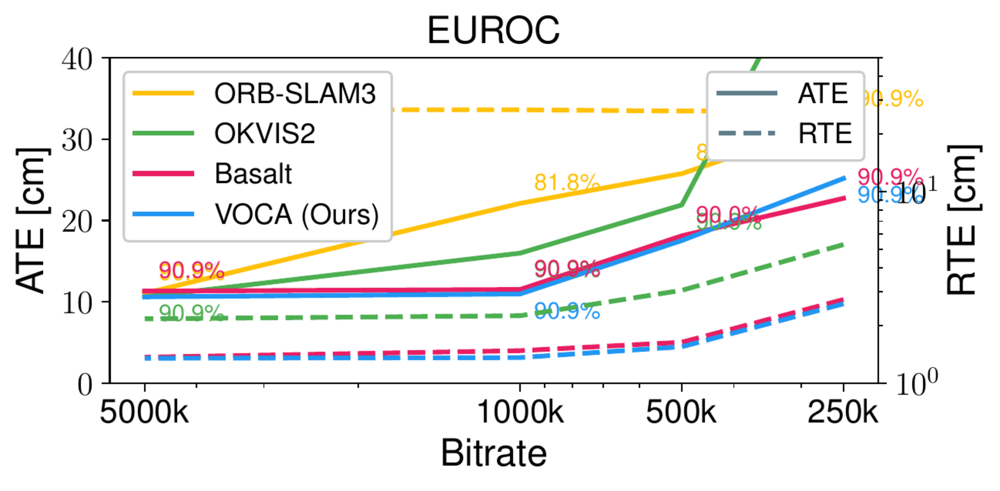
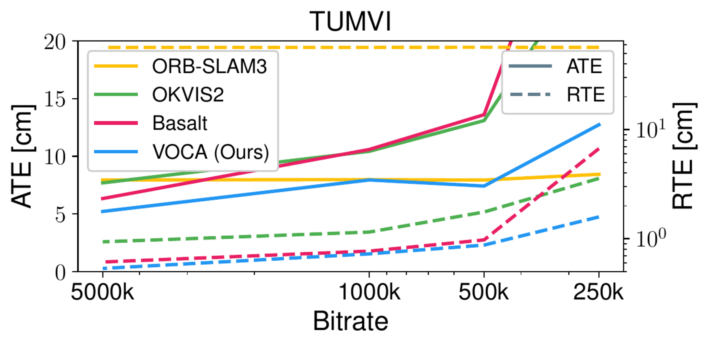
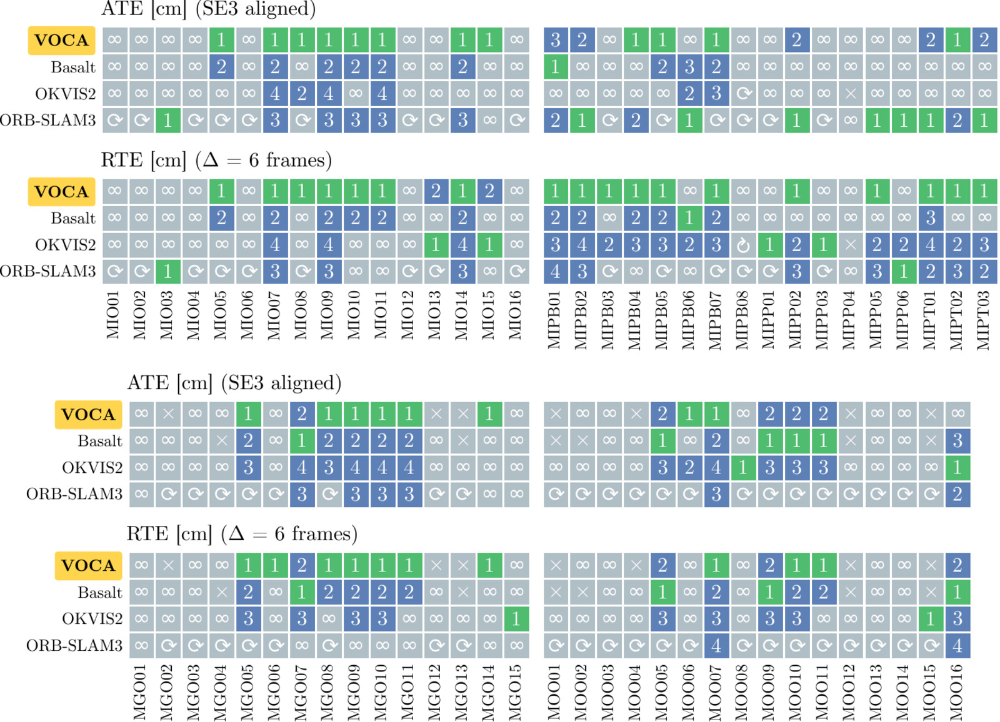

A causal stereo visual odometry method that reuses video codec information, such as motion vectors and I-frame structure, to keep tracking under lossy compression.
1 Technical University of Munich 2 Munich Center for Machine Learning
* Equal contribution
Camera pose estimation from image streams is a critical component of spatial world models that integrate perception into planning and decision-making. Nearly all visual odometry (VO) and SLAM systems have focused on datasets containing raw, uncompressed videos. Many working systems instead use ubiquitous hardware units to efficiently compress and decode video streams, saving orders of magnitude in storage and bandwidth. However, this lossy compression introduces visual artifacts that hinder the performance of traditional tracking systems.
We present VOCA, a causal stereo visual odometry method that exploits codec information to improve tracking. It reaches state-of-the-art performance on causal VO for relative trajectory error, efficiency, and absolute trajectory error on compressed streams, showing the potential of widely available video codec information for vision tasks.
A raw stereo stream of 640×480 monochrome images at 30 fps produces more than a gigabyte per minute, so practical systems compress camera streams with hardware codecs such as H.264, AV1, and VP9. The compression is lossy. It blurs detail, flattens contrast, and adds blocky artifacts that break the brightness constancy assumption behind KLT feature tracking. Around 100× compression is enough to make state-of-the-art VO and SLAM systems drift or diverge.
The encoded bitstream still carries useful structure. Every inter-frame block comes with a motion vector that points to a similar-looking region in a past frame. These vectors are optimized for compression, so they are noisy estimates of scene motion, but they still roughly follow optical flow and can cover displacements too large for an image pyramid. VOCA reuses this near-free metadata as a tracking prior.

VOCA is built on the odometry system Basalt, using the tracking front-end from Monado's fork. It stays causal: encoding order matches capture order and inter-frame prediction only references past frames, so it fits real-time streaming.

Decoded motion vectors are purely translational and too noisy to use as correspondences directly, and they cannot express the in-plane rotation in Basalt's SE(2) patch model. VOCA uses them only to initialize the KLT translation, then lets the optimizer refine translation and rotation. Where a vector is unreliable, from low texture, repetition, or motion blur, the refinement corrects it.

Large-displacement priors can introduce false positives: a wrong vector that lands on a similar-looking region, or a correct vector on a moving object. Forward-backward consistency does not catch these, so VOCA tracks each point twice, with and without the motion prior. A point found by one mode is kept; a point found by both is kept only if the two agree. I-frames carry no motion vectors and tend to appear when the scene changes most, so VOCA reuses the vectors from the last P-frame under a constant-motion assumption to bridge them.
We evaluate on EuRoC (drone), TUM-VI (handheld), and the Monado SLAM Dataset (head-mounted VR and humanoid), compressing each camera separately up to about 100×. Baselines are ORB-SLAM3, OKVIS2, MoV-SLAM (the only earlier method aimed at compressed video), and Basalt, all run as causal stereo with loop closure disabled to isolate the front-end.



Median ATE / RTE vs. bitrate on EuRoC (left) and TUM-VI (right). VOCA stays stable down to 500 kbps, roughly 100× compression, while the baselines lose accuracy, OKVIS2 most of all.

On EuRoC, VOCA improves RTE over Basalt by about 15% and recovers hard sequences where other systems fail. On TUM-VI it stays consistent across the room sequences. On the Monado SLAM Dataset, with dynamic occlusions, strong accelerations, and fast rotations, median ATE and RTE improve by roughly 37% and 40% over the second-best method, with a 36% higher success rate. The ablation shows the parallel motion-vector and optical-flow consensus with I-frame bridging gives the best overall accuracy.
@inproceedings{hilscher2026voca,
author = {Hilscher, Nouri Alexander and de Mayo, Mateo and Muhle, Dominik
and Otten genannt Hermes, Christoph and Cremers, Daniel},
title = {{VOCA}: Visual Odometry with Codec Awareness},
booktitle = {European Conference on Computer Vision (ECCV)},
year = {2026},
}
This work was supported by the European Research Council (ERC) Advanced Grant SIMULACRON, by the DFG project CR 250/26-1 “4D-YouTube”, by the GNI Project “AI4Twinning”, and by the Munich Center for Machine Learning.
VOCA builds on the Basalt codebase and Monado's fork of Basalt, and is evaluated on the Monado SLAM Dataset, EuRoC, and TUM-VI.